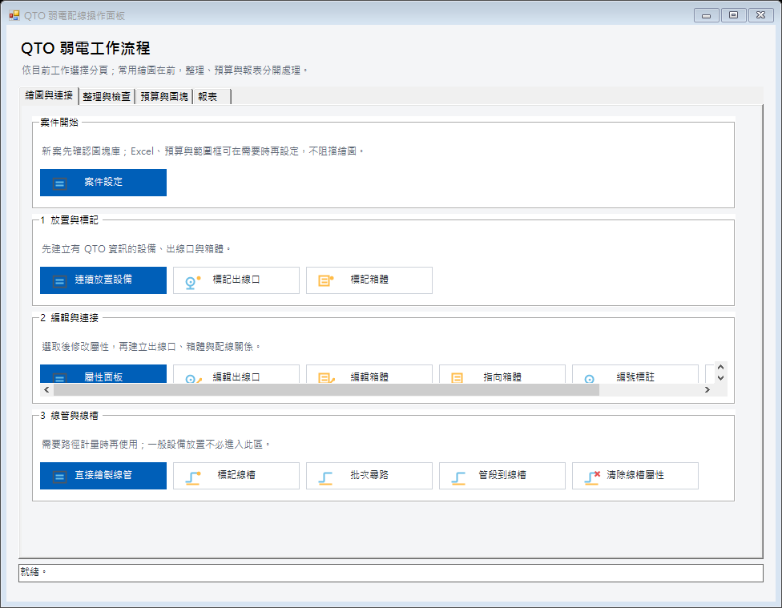
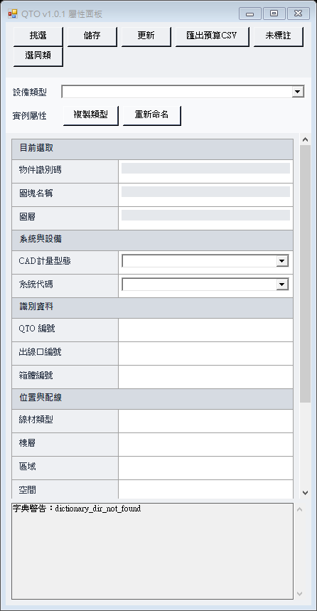
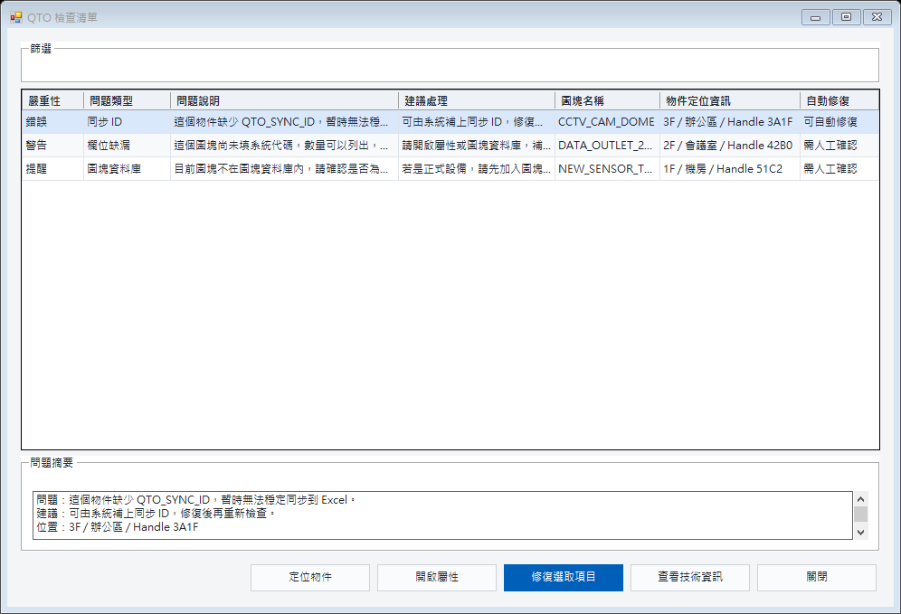

先看這一頁：外掛到底改變了什麼
一般 AutoCAD 只知道「這裡有一個圖塊、一條線、它在某個圖層」。QTO 外掛會在不改變原本幾何畫法的前提下，替需要計量的圖塊或線條加上工作資訊，例如：它是什麼設備、屬於哪個系統、在哪一層、用什麼線材、數量怎麼算、最後對應到哪個預算品項。
| 一般 AutoCAD | 加入 QTO 後 |
|---|---|
| 看到圖形、圖層、圖塊名稱。 | 仍看同一張圖，但可另外知道設備類型、系統、樓層、線材、數量依據與預算對應。 |
| 複製圖塊後，通常還要人工重算數量。 | 有 QTO 資訊的物件被新增、刪除或複製後，可在 CAD 指令結束時重新整理數量。 |
| 樓層、系統常靠圖層名稱或人工記憶。 | 可用樓層框、系統框批次套用；兩種框重疊處會同時得到樓層與系統。 |
| 預算表與圖面分開維護，改圖後容易漏改。 | CAD 是數量來源；Excel 保留單價、備註等人工內容，數量可由 CAD 更新。 |
| 漏列預算通常靠經驗逐項找。 | 完整性檢查會列出「CAD 有、預算無」與「預算有、CAD 無」等缺口。 |
| 原本做法 | 畫 CAD | → | 逐層查數量 | → | 另開 Excel | → | 改圖再重算 |
| QTO 做法 | 畫有資料的 CAD | → | 自動彙整 | → | 對應預算 | → | 改圖後更新數量 |
目錄與建議閱讀方式
第一次使用：先讀第 1～5 章。查某個圖示：直接看第 8 章。公司管理者：再讀第 10 章。
1. 先建立正確觀念
1.1 哪些物件會被 QTO 管理
只有已經有 QTO 資訊的圖塊、線條或聚合線才會進入計量。普通建築底圖、文字、尺寸、未標註的圖塊不會因為落在範圍框內就自動變成 QTO 物件。
| 圖面物件 | 常見 QTO 身分 | 常見數量方式 |
|---|---|---|
| 設備／插座圖塊 | 設備、出線口、箱體、盤箱 | 點位數量 |
| 配線 Polyline | 配線 | 實際長度 |
| 管段／線槽 Polyline | 管段、線槽 | 實際長度 |
| 範圍 Polyline | 樓層框、系統框 | 不計量，只套用屬性 |
1.2 設計人員真正需要理解的資料
| 畫面欄位 | 白話意思 | 何時要確認 |
|---|---|---|
| 設備類型 | 這個東西實際上是什麼，例如攝影機、資訊插座、讀卡機。 | 插入、轉換舊圖或準備預算前。 |
| CAD 計量型態 | 在 CAD 裡要把它當「點、線、箱體、線槽或盤箱」哪一類來算。 | 決定數量方式時。 |
| 系統代碼 | 它屬於弱電、停管、資訊、TV、CCTV、BA、視聽音響或緊急廣播。 | 分類、篩選、預算對應前。 |
| 線材／管材 | 實際使用的線或管，例如 Cat.6、光纖、EMT。 | 畫線管或建立預算組合前。 |
| 樓層／區域／空間 | 物件位於哪一層、哪個區域、哪個房間。 | 需要樓層統計或會議查量時。 |
| 數量依據／單位 | 按點算、按長度算，單位是點、只、組或公尺。 | 輸出數量與 mapping 前。 |
| 對應狀態 | 目前只是候選、需要確認、被阻擋，或已確認。 | 正式納入預算草稿前。 |
1.3 CAD、Excel、圖塊庫各自負責什麼
| 資料位置 | 主要負責內容 | 不要拿來做什麼 |
|---|---|---|
| 專案 DWG | 幾何、數量來源、QTO 屬性、樓層／系統框、案件 mapping、連結的 Excel 路徑。 | 不要把它當公司共用預算主檔。 |
| 預算 Excel | 預算草稿、數量統整、人工單價、倍數、廠牌、備註與確認狀態。 | 不反向修改 CAD 幾何與設備屬性。 |
| 標準圖例 DWG | 公司標準圖塊與預設 QTO 分類的來源。 | 一般使用者不必手動維護背景 JSON。 |
| 公司預算規則庫 | 跨案件可重複使用、已確認的品項對應規則。 | 案件內確認後不會自動污染公司規則。 |
2. 認識 Ribbon 與圖示
AutoCAD 上方會出現 QTO 弱電計算 頁籤。Ribbon 是高頻入口；需要搜尋、多選、預覽或確認的工作會再開獨立視窗。
| 流程 | 圖塊庫 | 快速繪圖 | Excel 同步 | 樓層／系統 | 預算前置 |
|---|---|---|---|---|---|
 案件設定 案件設定 操作面板 操作面板一鍵連接 |
 插入圖塊 插入圖塊 管理圖塊庫 管理圖塊庫 更新專案圖塊 更新專案圖塊 |
 連續放置設備 連續放置設備 繪製線管 繪製線管 轉換舊物件 轉換舊物件 |
同步主控 重整 Excel 重整 Excel 檢查修復 檢查修復 |
 樓層框 樓層框系統框 清除框線 |
 屬性面板 屬性面板 預算對應 預算對應 完整性檢查 完整性檢查 |
| 出線口 | 箱體 | 線槽 | 報表 |
|---|---|---|---|
| 標記出線口 編號標註  指向箱體 指向箱體編輯出線口 刪除出線口 |
標記箱體 編輯箱體 刪除箱體 |
標記線槽 批次尋路 批次尋路管段到線槽 清除線槽屬性 |
 出線口清單 出線口清單配線關係明細 線段明細  管段明細 管段明細 |
2.1 圖示的共通語言
| 圖示特徵 | 代表意思 |
|---|---|
| 藍色圓點與立線 | 出線口或點位。 |
| 橘色方框 | 箱體、盤箱或接線箱。 |
| 折線／路徑 | 配線、管段、線槽或連接。 |
| 紙張與水平線 | 清單、檢查或匯出報表。 |
| 外框與中心標記 | 樓層框、系統框等範圍管理。 |
| 右上角紅色叉 | 清除 QTO 資訊或範圍屬性，不一定刪除 CAD 幾何。 |
| 右上角橘色點／筆 | 標記或編輯。 |
3. 新案件第一次怎麼做
以下是一般新案的建議順序。不是每一步都必須第一天完成；圖塊庫建議先設定，Excel 與正式預算可以等到要估算時再接上。
| 1 | 開啟案件設定 按 「案件設定」，確認目前 DWG、圖塊資料庫、Excel、正式預算、範圍框與同步狀態。 |
| 2 | 選擇標準圖例 DWG 若尚未設定圖塊庫，進入「管理圖塊庫」，選擇公司或專案的標準圖例 DWG。一般設計人員不需要自行製作 JSON。 |
| 3 | 建立樓層與系統範圍 圖面若按樓層、系統矩陣排列，可先畫封閉 Polyline，再分別按「樓層框」與「系統框」。框只管理樓層或系統其中一項。 |
| 4 | 開始放置設備 單次選用「插入圖塊」；大量重複放置用「連續放置設備」。插入後已帶入設備類型、系統與同步 ID。 |
| 5 | 畫配線與管段 需要長度計量時用「繪製線管」；既有線段則用「轉換舊物件」。 |
| 6 | 檢查屬性 選取物件後用「屬性面板」確認設備類型、計量型態、系統、線材、樓層與數量單位。 |
| 7 | 建立編號與關聯 需要時標記出線口／箱體、編號標註、指向箱體或執行一鍵連接。 |
| 8 | 檢查修復 在準備估算前按「檢查修復」，先處理缺系統、缺設備類型、重複編號、缺配線等問題。 |
| 9 | 連結 Excel 與正式預算 從案件設定或同步主控選擇／建立 Excel，再從「預算對應」匯入正式預算格式。 |
| 10 | 確認 mapping 與完整性 一個 CAD 計量群組可對應設備、線材、管材、工資等多個預算品項。完成後執行「完整性檢查」。 |
4. 平常繪圖怎麼用
4.1 每天開始工作
- 開啟正確 DWG，確認目前案件名稱。
- 若今天要同步預算，開「案件設定」確認 Excel 路徑，再啟用自動同步。
- 若只是繪圖，不需要開 Excel，也不需要每次按「重整 Excel」。
- 開「操作面板」可按工作順序使用，不必在 Ribbon 上來回尋找所有功能。

4.2 放置設備：單次與連續的差別
| 情境 | 建議按鈕 | 理由 |
|---|---|---|
| 只放一兩個不同設備 | 插入圖塊 | 可搜尋、預覽，再選原點或圖形中心插入。 |
| 同一設備連續配置多個房間 | 連續放置設備 | 圖塊只選一次，可連續指定位置。 |
| 舊圖已經有大量圖塊 | 轉換舊物件 | 不必刪掉重畫，只轉換使用者選取的物件。 |
4.3 用樓層框、系統框減少重複填寫
樓層框與系統框是兩種不同的封閉範圍。物件在樓層框內只會改樓層；在系統框內只會改系統；位於兩者重疊區才同時取得兩項資訊。
| 樓層框：3F | 只套用「樓層＝3F」 | ＋ | 系統框：CCTV | 只套用「系統＝CCTV」 |
| 重疊區內的 QTO 物件：樓層＝3F、系統＝CCTV | ||||
4.4 選取、複製、移動後會發生什麼
- 選取物件：屬性面板會顯示該物件資料；多選時只應修改共同欄位。
- 複製 QTO 物件：外觀與工作屬性可保留，但同步 ID 會重新配發，避免兩個物件被當成同一筆。
- 移入另一個範圍框：命令完成後，樓層或系統可依新範圍更新。
- 移出所有同類範圍框：對應的樓層或系統欄位會清空。
- 刪除物件：下次 Excel 更新時，數量會依圖面現況重新計算。
4.5 屬性面板怎麼看

| 面板按鈕 | 作用 | 使用提醒 |
|---|---|---|
| 挑選 | 回到 CAD 指定要檢視或編輯的物件。 | 多選可批次修改共同欄位。 |
| 儲存 | 把目前欄位寫回選取物件。 | 確認設備類型與系統無誤再存。 |
| 更新 | 重新讀取目前選取的資料。 | 外部修改後畫面未更新時使用。 |
| 匯出預算 CSV | 輸出預算前置資料。 | 不是正式報價表。 |
| 未標註 | 找出尚未有完整 QTO 資訊的物件。 | 用於整理舊圖或估算前檢查。 |
| 選同類 | 依設備類型、計量型態、系統或線材選取相同物件。 | 會先跳條件視窗，至少勾一個條件。 |
| 複製類型 | 由既有設備類型複製一份再調整。 | 適合相近規格，不等於複製 CAD 圖塊。 |
| 重新命名 | 更改設備類型顯示名稱。 | 避免任意改動公司已共用的正式代碼。 |
5. 預算與 Excel 怎麼用
5.1 正確的角色分工
CAD 是數量來源，Excel 是預算整理工作簿。設計人員在 CAD 新增、刪除或調整 QTO 物件，Excel 的數量可更新；Excel 裡人工填寫的單價、倍數、廠牌、備註與確認狀態應被保留。
5.2 第一次連結 Excel
- 按「案件設定」或「同步主控」。
- 選擇既有案件 Excel，或建立新的案件 Excel。
- 確認顯示的路徑屬於目前 DWG，不是另一個案件。
- 需要邊畫邊更新時，再按「啟用自動同步」。
開啟 DWG 本身不會自動建立或開啟 Excel。這可避免只是看圖或修改小地方時，跳出不需要的工作簿。
5.3 自動同步與重整 Excel 的差別
| 功能 | 什麼時候用 | 會做什麼 |
|---|---|---|
| 啟用自動同步 | 當天會持續改圖並希望 Excel 跟著更新。 | 相關 CAD 指令結束後，把多個變更合併成一次更新；不是每 5 秒輪詢。 |
| 暫停同步 | 大量複製、搬移、整理圖面，暫時不希望一直更新 Excel。 | 停止自動更新；CAD 可照常操作。 |
| 重整 Excel | 第一次建立、同步失敗、Excel 忙碌，或改了版面／mapping 規則。 | 重新掃描全圖並重建受外掛管理的工作表，保留人工欄位。 |
5.4 預算對應的白話理解
CAD 裡的一組設備數量，通常不只對應一個報價品項。例如一個資訊插座可能同時需要面板、模組、線材、管材、施工工資。預算對應就是把「CAD 計量群組」連到一個或多個正式預算明細，並指定數量怎麼算。
| CAD 群組 資訊插座 × 25 | → | 資訊插座面板 × 25 | Cat.6 配線 × CAD 長度 | 配管 × CAD 長度 | 工資 × 25 |
可用的受控數量規則包括：原始數量、CAD 長度、固定數量、乘倍數、加耗損率、每樓層一筆、每區域一筆。未確認的候選規則不應納入正式合計。
5.5 預算完整性檢查
| 檢查分類 | 代表意思 | 設計人員該做什麼 |
|---|---|---|
| CAD 有、預算無 | 圖面已有設備或長度，但沒有已確認的預算對應。 | 開預算對應，選擇正式品項並確認。 |
| 預算有、CAD 無 | 預算明細目前沒有 CAD 數量來源。 | 確認是否漏畫、漏 mapping，或標記人工估算／固定數量／不適用。 |
| 對應待確認 | 只有候選或需人工確認的規則。 | 不能直接當正式數量，需人工確認。 |
| 規則異常 | 目標不存在、單位不一致、重複 mapping 或規則被阻擋。 | 先修規則，再更新 Excel。 |
6. 檢查問題與修復
「檢查修復」會把同步 ID、屬性缺漏、編號、配線關係、圖塊版本與預算問題整理到同一份清單。清單支援多選，不需要逐筆打開。

6.1 三種嚴重性
- 錯誤：通常會影響同步、數量或關聯，應優先處理。
- 警告：資料可能不完整或需要判斷，估算前應確認。
- 提醒：不一定錯，但外掛無法替你判斷。
6.2 哪些可以自動修，哪些不行
| 可安全自動處理 | 必須人工確認 |
|---|---|
| 缺少或重複的同步 ID，可重新配發。 | 設備類型、系統、線材、數量依據、預算品項、出線口與箱體關聯。 |
原因很簡單：同步 ID 是技術識別碼，外掛可確定如何修；但設備屬於哪個系統、要報哪個品項，是設計與估算判斷，外掛不能猜。
7. 常見工作情境：遇到什麼需求，按什麼
| 工作情境 | 第一個按鈕 | 接著使用 | 完成判斷 |
|---|---|---|---|
| 新案剛開始畫 | 案件設定 | 管理圖塊庫 → 樓層框／系統框 → 插入圖塊 | 插入物件能在屬性面板看到設備、系統與計量型態。 |
| 同類設備要放很多個 | 連續放置設備 | 屬性面板抽查 → 檢查修復 | 每個物件有獨立同步 ID，數量正確。 |
| 接手舊 CAD | 轉換舊物件 | 範圍管理 → 選同類 → 屬性面板 | 只有選取的舊物件被納入 QTO。 |
| 整層設備要改樓層 | 樓層框 | 範圍管理／套用全部 | 框內 QTO 物件樓層更新，普通物件不受影響。 |
| 整區改成 CCTV | 系統框 | 完整性檢查或選同類抽查 | 框內 QTO 物件系統更新，樓層不被改動。 |
| 想找漏設 QTO 的物件 | 屬性面板 | 未標註 → 批次設定／轉換舊物件 | 需要計量的物件都有設備類型、計量型態與系統。 |
| 要依配置圖調整架構 | 報表或檢查修復 | 出線口清單／配線關係明細 | 可看出各設備、箱體與配線關係，再回頭調整架構圖。 |
| 開始估算 | 同步主控 | 預算對應 → 完整性檢查 → 重整 Excel | 未確認 mapping 不進正式合計，缺口已有處理。 |
| 改圖後要更新預算 | 啟用自動同步 | 必要時重整 Excel | Excel 數量更新，人工單價與備註保留。 |
| 公司圖塊有新版 | 更新專案圖塊 | 差異預覽 → 勾選 → 確認更新 | 位置、旋轉、比例、同名屬性與 QTO 資料保留。 |
8. 34 個 Ribbon 按鈕圖解
以下按 Ribbon 分區列出。表內「連動」表示這個按鈕完成後，最常接著使用的功能或會被更新的資料。
8.1 流程
| 圖示／按鈕 | 用途 | 連動與提醒 |
|---|---|---|
| QTO_PROJECT_SETUP | 集中確認本 DWG 的圖塊庫、Excel、正式預算、mapping、樓層／系統框與同步狀態。 | 新案建議先開；不會因未設定 Excel 而阻擋繪圖。 |
| QTO_WORKFLOW_PANEL | 依工作順序整理所有主要功能，適合新人與日常使用。 | 內含繪圖、檢查、預算、圖塊與報表入口。 |
| QTO_CREATE_CONNECTIONS | 依目前選取與既有關係建立出線口、箱體或配線連接。 | 使用前先確認出線口、箱體編號與系統；完成後用配線關係明細檢查。 |
8.2 圖塊庫
| 圖示／按鈕 | 用途 | 連動與提醒 |
|---|---|---|
| QTO_INSERT_CATALOG_BLOCK | 搜尋、預覽標準圖塊，可選依圖塊原點或圖形中心插入。 | 插入後自動帶 QTO 預設值；未分類圖塊可能需人工確認。 |
| QTO_BLOCK_LIBRARY_MANAGER | 選擇圖例 DWG，整理圖塊顯示名稱、系統、設備類型、計量方式與預設材料。 | 一般使用者不編輯 JSON；公司管理人員可批次設定並儲存。 |
| QTO_UPDATE_PROJECT_BLOCKS | 比較專案圖塊與標準庫，先預覽差異再批次更新。 | 不會背景自動替換；更新前需勾選確認，衝突項進 Review。 |
8.3 快速繪圖
| 圖示／按鈕 | 用途 | 連動與提醒 |
|---|---|---|
| QTO_PLACE_CATALOG_CONTINUOUS | 選一次設備後連續指定多個插入點。 | 適合大量同型設備；完成後抽查樓層、系統與同步 ID。 |
| QTO_DRAW_QTO_PATH | 直接繪製配線、管段或線槽，完成時寫入長度與材料資料。 | 會影響線段／管段明細與預算 mapping。 |
| QTO_CONVERT_LEGACY_OBJECTS | 把選取的既有圖塊、線段或聚合線轉成 QTO 物件。 | 只處理選取物件；轉換後仍要確認設備類型、系統與單位。 |
8.4 Excel 同步
| 圖示／按鈕 | 用途 | 連動與提醒 |
|---|---|---|
| QTO_PANEL | 選擇／建立案件 Excel、啟停自動同步、開啟預算設定與查看同步紀錄。 | Excel 路徑隨 DWG 保存；切換圖面時要看清目前路徑。 |
| QTO_SYNC_FULL_REBUILD | 立即依全圖現況重新整理受外掛管理的 Excel 工作表。 | 不是每次修改都要按；同步異常、初次建立或規則變更時使用。 |
| QTO_VALIDATE | 開啟統一 Review 清單，篩選、定位、多選與安全修復。 | 設備、系統、材料、mapping 不會自動猜；需人工確認。 |
8.5 樓層／系統
| 圖示／按鈕 | 用途 | 連動與提醒 |
|---|---|---|
| QTO_SCOPE_DEFINE_FLOOR | 把封閉 Polyline 設為樓層範圍，只覆蓋框內 QTO 物件的樓層。 | 不修改系統；無 QTO 物件跳過。 |
| QTO_SCOPE_DEFINE_SYSTEM | 把封閉 Polyline 設為系統範圍，只覆蓋框內 QTO 物件的系統。 | 不修改樓層；同類框重疊時最後設定者優先。 |
| QTO_SCOPE_CLEAR | 清除選取 Polyline 的樓層框／系統框身分。 | 不刪除 Polyline 幾何本身；之後可重新套用全部。 |
8.6 預算前置
| 圖示／按鈕 | 用途 | 連動與提醒 |
|---|---|---|
| QTO_PROPERTY_PANEL | 查看與修改設備類型、計量型態、系統、線材、位置、數量依據與狀態。 | 最常用的資料檢視入口；多選時避免覆蓋不想改的欄位。 |
| QTO_BUDGET_MAPPING | 匯入正式預算階層，把 CAD 群組對應到一個或多個預算明細。 | 建立後還要確認規則；候選不等於正式。 |
| QTO_BUDGET_COMPLETENESS | 找出 CAD／預算缺口、待確認、單位衝突與重複規則。 | 完成 mapping 後、送估算前、重大改圖後使用。 |
8.7 出線口
| 圖示／按鈕 | 用途 | 連動與提醒 |
|---|---|---|
| QTO_MARK_OUTLETS | 把選取圖塊標記為出線口。 | 後續可編號、指向箱體、建立配線與匯出清單。 |
| QTO_LABEL_OUTLETS | 在選取出線口上方批次產生編號標註。 | 先確認出線口編號，避免重複或空白標註。 |
| QTO_CALLOUT_TO_JB | 產生指向箱體的短箭頭與箱體名稱標註。 | 先標記箱體並設定箱體編號。 |
| QTO_EDIT_OUTLET_PROPERTIES | 批次修改出線口編號、箱體編號、系統與線材。 | 適合既有案件；較完整欄位改用屬性面板。 |
| QTO_DELETE_OUTLET_INFO | 清除選取圖塊的出線口 QTO 資訊。 | 通常不刪除圖塊幾何；操作後會退出出線口計量與關聯。 |
8.8 箱體
| 圖示／按鈕 | 用途 | 連動與提醒 |
|---|---|---|
| QTO_MARK_JB | 把選取圖塊標記為接線箱／箱體。 | 後續可被出線口指向或作為配線終點。 |
| QTO_EDIT_JB_PROPERTIES | 批次修改箱體編號與系統。 | 箱體編號應唯一；修改後檢查出線口關聯。 |
| QTO_DELETE_JB_INFO | 清除選取圖塊的箱體 QTO 資訊。 | 可能使既有出線口關聯失效，完成後跑檢查修復。 |
8.9 線槽
| 圖示／按鈕 | 用途 | 連動與提醒 |
|---|---|---|
| QTO_MARK_TRAY | 把 Polyline 標記為線槽網路。 | 後續可供尋路；需確認端點是否相接。 |
| QTO_BATCH_ROUTE_BY_TRAY | 讓多個出線口依已標記線槽網路尋路。 | 是進階工具；先確認線槽網路連續與端點正確。 |
| QTO_CONDUIT_TO_TRAY | 由出線口建立到最近線槽的正交管段並統計長度。 | 框選線槽與出線口；完成後抽查最近線槽是否合理。 |
| QTO_CLEAR_TRAY_PROPERTIES | 清除選取 Polyline 的線槽 QTO 資訊。 | 不一定刪除線；會退出線槽網路與計量。 |
8.10 報表
| 圖示／按鈕 | 用途 | 連動與提醒 |
|---|---|---|
| QTO_EXPORT_OUTLETS | 匯出所有出線口資料，檢查編號、系統與箱體對應。 | 適合開會、查漏與配置回調。 |
| QTO_CHECK_WIRE | 檢查出線口、箱體與配線關係並輸出 CSV。 | 只檢查與輸出，不改變圖面物件。 |
| QTO_EXPORT_JB_SUMMARY | 輸出每個出線口的線段長度與箱體小計。 | 適合檢查配線量與箱體分配。 |
| QTO_EXPORT_CONDUIT_SUMMARY | 重新計算並輸出 QTO 管段長度。 | 適合配管數量檢查；不是正式報價表。 |
9. 主要視窗怎麼操作
9.1 案件設定：先看狀態，再決定要不要設定
案件設定不是每次都要填完的表單。它是一張本案狀態總覽：圖塊庫可先設定；Excel、正式預算與範圍框在需要時再接上。操作順序建議由上往下：
- 確認目前 DWG 名稱。
- 選擇或檢查圖塊資料庫。
- 選擇／建立本案 Excel。
- 需要估算時開預算對應與完整性檢查。
- 確認樓層框、系統框數量與同步是否啟用。
9.2 預算對應：三步驟，不要從空白表格猜
| 1 | 選擇預算來源：匯入既有 Excel 的正式預算階層。右側若完全空白，先確認是否已匯入，不要直接建立 mapping。 |
| 2 | 建立對應：左側多選 CAD 計量群組，右側多選正式預算明細，選擇數量規則後建立。 |
| 3 | 檢查並儲存：確認規則狀態、單位與重複項，再儲存。只有 confirmed 規則可進正式數量。 |
9.3 圖塊庫管理與插入
- 管理圖塊庫：面向公司圖塊整理人員，需要搜尋、多選、預覽與批次設定。
- 插入圖塊：面向設計人員，重點是快速搜尋與辨認圖形。
- 更新專案圖塊：面向專案維護，只在標準庫有新版時使用，必須先看差異。
圖塊來源以 DWG 為主。背景索引由外掛維護，設計人員不必了解 JSON 格式。
9.4 同步主控
同步主控主要回答四個問題：目前連到哪個 Excel、同步是否啟用、上次何時更新、還有多少問題。一般日常只需要：
- 確認 Excel 路徑。
- 按啟用／暫停同步。
- 必要時開檢查清單或預算表設定。
- 發生異常時查看同步紀錄，再決定是否重整 Excel。
10. 日常維護與公司管理
10.1 設計人員每案要維護什麼
- 確認案件 DWG 連到正確的 Excel。
- 新增設備類型時，名稱、系統、計量型態與單位要一致。
- 樓層框與系統框移動或改範圍後，抽查框內物件。
- 正式估算前，處理 Review 與完整性缺口。
- 重大改圖後，確認 Excel 數量與人工欄位都保留。
10.2 公司管理者要維護什麼
| 項目 | 建議負責人 | 維護原則 |
|---|---|---|
| 標準圖例 DWG | CAD／弱電標準管理者 | 圖塊名稱穩定、圖形可辨識、插入基準一致；更新前留版本。 |
| 設備類型與系統分類 | 設計主管或估算管理者 | 避免同物異名；代碼少改、顯示名稱可中文化。 |
| 公司預算規則 | 估算／成本管理者 | 只把跨案穩定且已驗證的規則升級為公司規則。 |
| 安裝包版本 | IT 或指定管理者 | 所有同事使用同一 Release 安裝包，不用 GitHub 原始碼 ZIP。 |
10.3 圖塊庫更新守則
- 先在標準圖例 DWG 完成圖形與屬性測試。
- 在圖塊庫管理器重新掃描並確認分類。
- 專案內使用「更新專案圖塊」查看差異與影響實例數。
- 只勾選確認過的圖塊更新。
- 更新後執行 Review，處理移除屬性、動態參數或衝突。
10.4 Excel 維護守則
- 原始預算工作表保持不動；外掛主要管理「預算草稿」與技術工作表。
- 人工單價、倍數、廠牌、備註與確認狀態放在外掛保留欄位。
- 不要任意刪除隱藏的 QTO 技術工作表；它們用來保存同步與 mapping 稽核資料。
- AutoCAD 與 Excel 建議用相同權限開啟，避免一個用系統管理員、另一個用一般權限。
- 案件交付時，DWG 與對應 Excel 應成對保存。
10.5 外掛更新
- 完整關閉 AutoCAD。
- 使用 GitHub Release 內的安裝包，不使用「Code → Download ZIP」。
- 解壓縮後執行
install_or_update_QtoWirePlugin.bat。 - 執行
check_installation.bat確認版本與 DLL。 - 重開 AutoCAD，確認 Ribbon 顯示「QTO 弱電計算」。
11. 常見問題排除
| 現象 | 先檢查 | 處理方式 |
|---|---|---|
| Ribbon 沒出現 | 是否安裝完成、AutoCAD 是否重開。 | 執行 QTO_SHOW_UI；仍無效則跑安裝檢查。 |
| 屬性面板是空白 | 目前是否選到有 QTO 資訊的物件。 | 按「挑選」或先用「轉換舊物件／標記」建立 QTO 資訊。 |
| 設備／系統下拉沒有內容 | 圖塊資料庫與字典是否載入。 | 從案件設定或管理圖塊庫重新選擇標準圖例 DWG。 |
| 樓層框沒有套用 | Polyline 是否封閉、框內物件是否已有 QTO 資訊。 | 確認範圍後用範圍管理套用全部；普通物件需先轉換。 |
| Excel 沒更新 | 目前 DWG 是否連到正確 Excel、自動同步是否啟用。 | 先看同步紀錄，再按重整 Excel；不要直接重建另一個檔案。 |
| Excel 開著時更新失敗 | AutoCAD 與 Excel 權限是否一致、Excel 是否正在編輯儲存格。 | 完成儲存格編輯，保持相同權限，再重試。 |
| 複製後出現重複同步 ID | 物件是否由非一般 CAD 複製流程產生。 | 開檢查修復，多選問題後只修復同步 ID。 |
| 預算右側空白 | 是否已匯入正式預算格式。 | 在預算對應第一步先選 Excel 並匯入。 |
| 完整性問題很多 | 是否仍在初次建立 mapping。 | 先處理 CAD 有、預算無；再把人工／固定／不適用品項分類。 |
| CAD 變卡 | 是否有大量物件變更、範圍框重疊、同步頻繁。 | 大量整理前暫停同步；分批操作；完成後再重整 Excel 與 Review。 |
回報問題時請準備
- 外掛版本與 AutoCAD 版本。
- 問題發生前按了哪些按鈕。
- AutoCAD 命令列完整訊息與錯誤視窗。
- 目前 DWG 與 Excel 路徑。
- 可重現問題的小型測試 DWG／Excel。
- 螢幕截圖，包含 Ribbon、視窗與命令列。
12. 工作前後檢查表
12.1 新案開始
- 目前 DWG 名稱與案件正確。
- 標準圖例 DWG 已選擇。
- 常用圖塊可搜尋、預覽與插入。
- 需要時已建立樓層框與系統框。
- 預算 Excel 尚未需要時保持未啟用，不影響繪圖。
12.2 每日收工前
- 新增／複製的設備可在屬性面板看到 QTO 資訊。
- 移動跨樓層／系統範圍的物件已抽查。
- 重要配線與管段長度合理。
- Review 沒有未處理的重大錯誤。
- 若啟用同步，Excel 已更新且人工欄位仍保留。
12.3 送估算或開會前
- 出線口、箱體、設備與配線關係已檢查。
- CAD 有、預算無的項目已完成 mapping 或註明原因。
- 預算有、CAD 無的項目已分類為人工、固定、不適用或待處理。
- 未確認 mapping 未納入正式合計。
- 出線口清單、配線關係明細或樓層數量可供會議查詢。
- 重要數量仍由設計／估算人員抽查，不只看外掛狀態。
12.4 交付或封存前
- DWG、對應 Excel、正式預算來源成套保存。
- 公司標準圖塊更新已完成必要 Review。
- 同步紀錄與完整性問題沒有未說明的錯誤。
- 接手人知道本案圖塊庫、Excel 與 mapping 狀態。
附錄：常用名詞白話表
| 名詞 | 白話解釋 |
|---|---|
| QTO | Quantity Takeoff，數量計算與彙整。 |
| QTO 物件 | 已加上 QTO 工作資訊、會被外掛計量的 CAD 物件。 |
| 同步 ID | 每個 QTO 物件的唯一識別碼，讓 CAD 與 Excel 知道是哪一筆。 |
| Catalog／圖塊資料庫 | 從標準圖例 DWG 整理出的圖塊清單與預設分類。 |
| Mapping／預算對應 | 把 CAD 的設備或長度，連到正式預算明細與數量規則。 |
| Candidate | 候選規則，僅供參考，尚未正式確認。 |
| Confirmed | 已由人員確認，可納入正式預算草稿數量。 |
| Review | 需要檢查、修復或人工判斷的問題清單。 |
| 範圍框 | 用封閉 Polyline 管理樓層或系統的區域，不是計量物件。 |
文件依 QtoWirePlugin v1.0.1 現有程式、Ribbon 命令與操作視窗整理。介面更新後應同步重製圖示與畫面，避免手冊與實際版本分離。